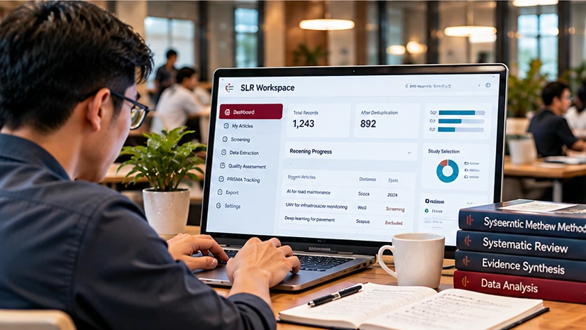

Participant Registration
Register as a postgraduate student or academic staff member for the complete four-stage SLR programme.
Register nowSLR Workspace
Manage article records and progress from registration through duplicate detection, study selection, quality assessment and data extraction.

Register as a postgraduate student or academic staff member for the complete four-stage SLR programme.
Register nowView records, indexing information and current repository data.
Open dashboardAdd a research article to the shared SLR repository.
Register articleIdentify duplicate records before formal screening.
Check duplicatesContinue with screening, quality assessment and extraction workflows.
Manage studies